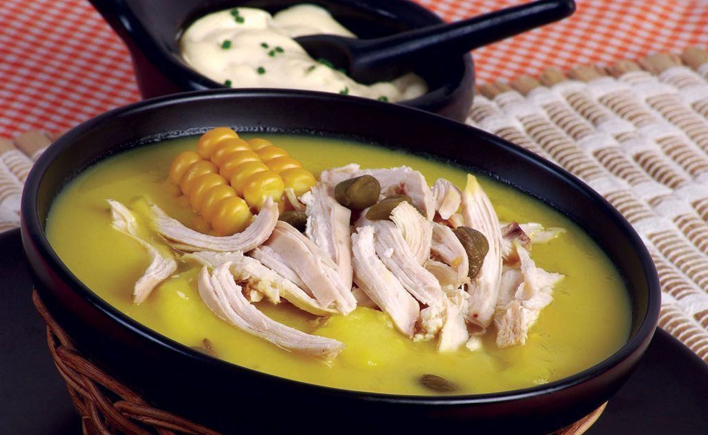

Febrero 8, 2023
AJIACO
Plato colombianoOtra variación del sancocho, tipo de la Región Santafereña. Este se diferencia por que el ingrediente destacado es la papa en sus 3 clases, papa criolla, papa pastusa y papa sabanera, agregadas en trozos grandes, esto ayuda a texturizar el sancocho. El pollo es la carne que lleva el ajiaco, mazorca, cilantro, guasca, ajo, cebolla larga, alcaparras, aguacate y para los que gusten pueden adicionarle crema de leche. La forma típica de servir en es vasijas de barro que ayudan a guardar el calor. Es muy tradicional en la capital de Colombia, Bogotá, donde se sirve casi a diario.
Read more →